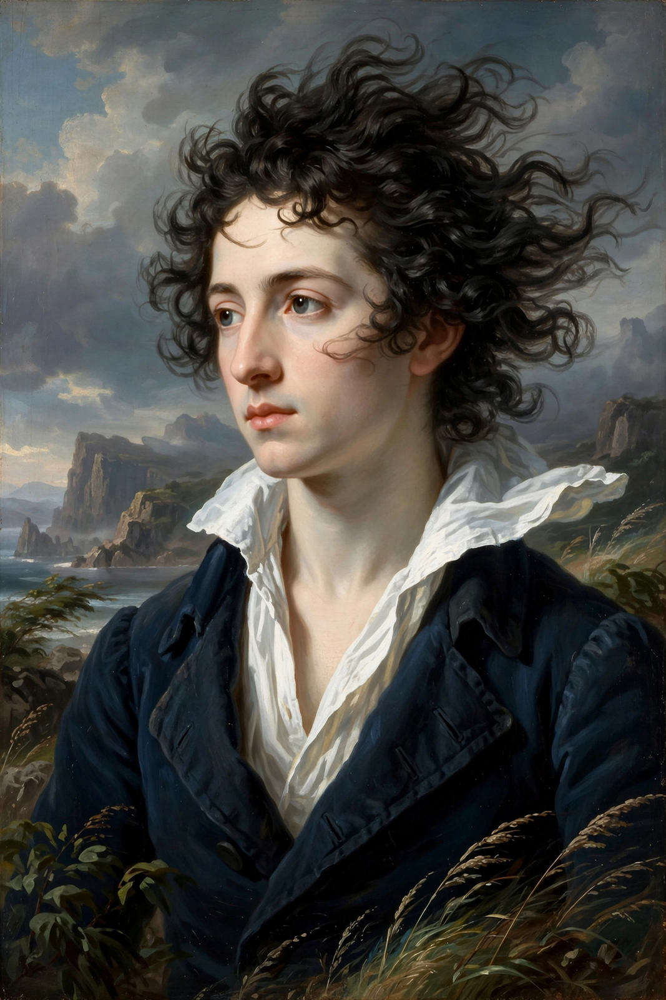

A Defence of Poetry

A Defence of Poetry is an essay by the English poet Percy Bysshe Shelley, written in 1821 in response to Thomas Love Peacock's satirical essay The Four Ages of Poetry (1820), which had argued that poetry was becoming useless in an age of science and progress. Shelley's essay — among the most influential statements of Romantic poetics — was not published until 1840, eighteen years after his death, when it appeared in Essays, Letters from Abroad, Translations and Fragments, edited by Mary Shelley.
Argument
Shelley defines poetry broadly, as "the expression of the imagination," and argues that imagination — not reason alone — is the faculty by which human beings sympathise with others and conceive new moral and social orders. Poets, in this expansive sense, include lawgivers, prophets, artists and philosophers. He traces poetry through history, from Homer and the Greek dramatists through Dante, Shakespeare and Milton, and contends that poetry is not a luxury of primitive ages but a perpetual force that renews language and perception: poets are "the hierophants of an unapprehended inspiration" and "the mirrors of the gigantic shadows which futurity casts upon the present."
"Poets are the unacknowledged legislators of the world."
The essay's famous closing line crowns its argument: poetry, by enlarging the imagination, shapes the moral and political future even when its influence is indirect and unrecognised.
Key ideas
- Reason vs. imagination: reason enumerates what is known; imagination perceives value and creates the new.
- Poetry and morality: imaginative sympathy — putting oneself in another's place — is the basis of moral good.
- Language: language itself originates as poetry, and poets refresh it against decay into convention.
- Social role: poetry is at once the most ancient and most prophetic of arts.
Influence
Unpublished in Shelley's lifetime, the Defence became a foundational document of Romantic criticism and is still widely anthologised and debated in literary studies; its claims are often read alongside Shelley's lyric poetry, such as "Ozymandias," as both theory and practice of the imagination's power over time and empire.